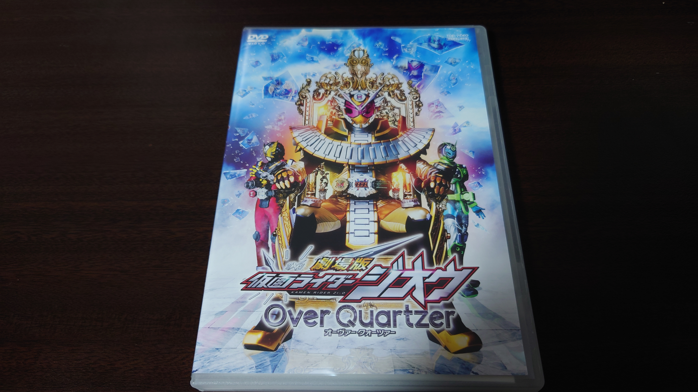

こんにちは、ザクザク食感です。
この前のツイートで取った「この手の記事にフォロワーのツイートを載せるのは迷惑にならないか」についてのアンケートに答えてくれたフォロワー、ありがとう！
急に自分のリテラシーが信用できなくなったので、フォロワーと感覚が合っていてよかった
では参ります
— 非破壊 (@safety_euglena) June 12, 2024
— ダイナミック散歩 (@mother_mom_12) June 13, 2024上手……
声的にこの曲もきっと合いそうと常々思っている（英語だけど）
Adobe Ch pic.twitter.com/LDPeQcX5Bv
— 非破壊 (@safety_euglena) June 13, 2024
笑っちゃった 素敵なモデルなので大切にしてください！！！アバター欲しいな〜と思いながら作ってた時期あったけど最終これで満足しておしまいになった pic.twitter.com/k0RXV5GYti
— 非破壊 (@safety_euglena) June 13, 2024
でも自分の絵だと罪悪感なく素材にできるから良い
TikTokキッズ 最高の瞬間 pic.twitter.com/dqnqDwZjIo
— ダイナミック散歩 (@mother_mom_12) June 13, 2024
— シグマス (@sigumasu) June 14, 2024余談ですが、↑の画像の元ネタの映画が好きすぎて円盤買ったらブルーレイじゃなくてDVDでワロいました 
くっせー pic.twitter.com/KWC2p5AUcs
— ダイナミック散歩 (@mother_mom_12) June 14, 2024
わかる あと動画が残ってるかが不安でならない（現状無事らしい）別にニコニコ見ないタコし対岸の火事タコかな〜くらいに思ってタコやが、総選挙の時の応援合作やCP合作が見られないことに気付いタコ それは困るタコ
— oct (@24takokai10) June 14, 2024
案外元ネタになっている気がする！花海姉妹からほんのりトトロを感じるの、咲季とサツキ・佑芽とメイの語感が近いからタコかも あと「お"姉"ち"ゃ"ん"！！！！」っての
— oct (@24takokai10) June 14, 2024
ピクミン2の主人公がオリマー（マリオ）とルーイ（ルイージ）みたいなアナグラムかもしれない
嫌さに慣らされていくことが本当に嫌だ
— おいし水 (@oississui) June 13, 2024
ネズミーマウスマーチ、当時のFLASH公開サイトで長々と「ミッキーマウスのパロディは合法である」理由を解説していた覚えがあるんだけども、オチとして「ねずみ男の著作権はバリバリ生きてるので水木先生に訴えられたら負ける」って書いてあって笑った
— 卯月由羽〒卜さん垢 (@udukiyuUTAU) June 14, 2024
紫雲清夏さん pic.twitter.com/wzIXXBJikf
— oct (@24takokai10) June 15, 2024
禿同ニコニコ動画(Re:仮)で「んん～まかううっっっ!!!!」というコメントで埋め尽くしているやつがいて「あ～、こういうおもんないやつもおったなぁ、昔のニコ動って」というノスタルジーに浸っている。なお、それはそれとしてフッターにある通報用リンクから通報した。
— Kossie/こじー (@kossie89) June 14, 2024
当時カゲプロもボカロも全然関係ない動画に「カゲプロのパクリじゃんｗｗｗ」みたいなコメントが付きまくっていたのを思い出した
— お柴鉱脈 (@Oshibacomyaku) June 15, 2024好きな言葉は猫駆除だ
元の曲（テニミュではない）めちゃくちゃかっこいいので是非聴いてください
「片づける」のことを「直す」っていうのは九州民だけらしい友達にジュースなおしといてって言ったら「？」みたいな反応してたからなんやこいつと思ってたら方言だったらしくてワロタ
— ダイナミック散歩 (@mother_mom_12) June 15, 2024
生きがいの一つなので寂しい；；チャンネル最終話の収録を終えました｡
— 桜井 政博 / Masahiro Sakurai (@Sora_Sakurai) June 15, 2024
まだ公開は先になると思いますが､それまでは通常回でお楽しみください…
以上！
壮大なエアリプじゃないか！？これ 内弁慶すぎる
でも良いものは良いのでもっと広まってほしい インターネットむず……
※あと載せるのやめてほしいツイートがあったらいつでも連絡くださいね！！！
それでは、さようなら。